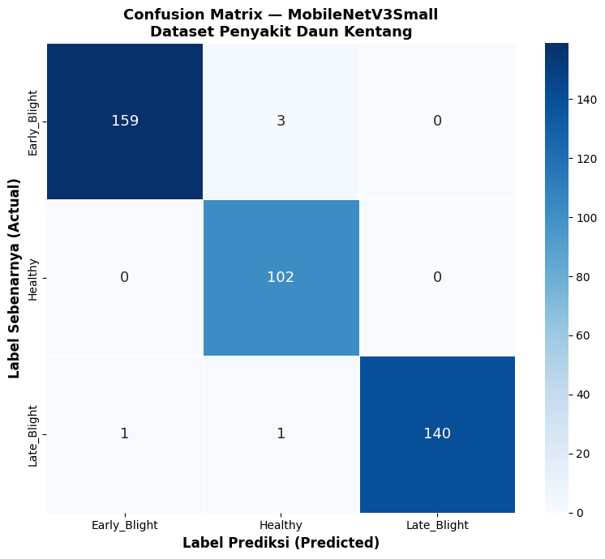

5 Gambar
Machine Learning · Skripsi S1
Potato Leaf Disease Classification Using Transfer Learning Based MobileNetV3Small Architecture
Klasifikasi penyakit daun kentang dengan optimasi Bayesian dan transfer learning dua fase. Akurasi internal 98.15% pada ukuran model ultra-ringan 3,59 MB.